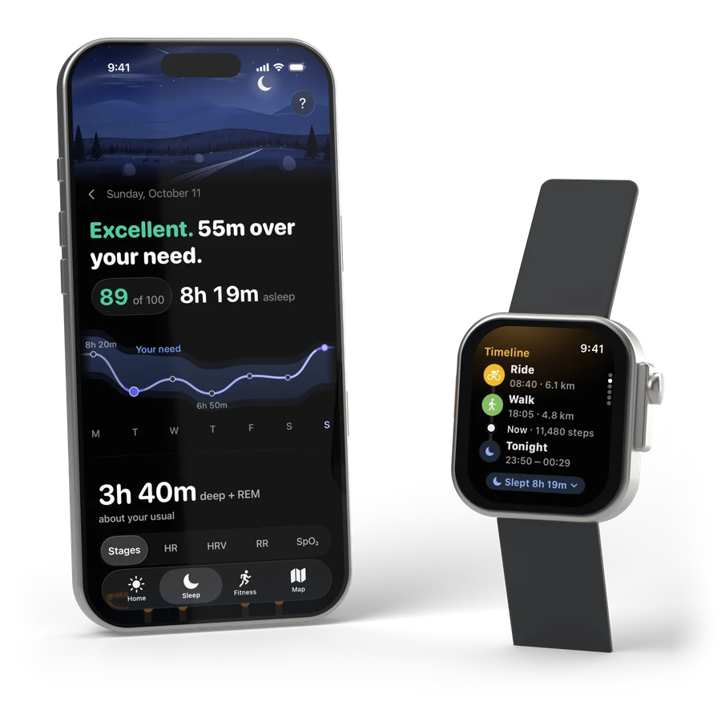
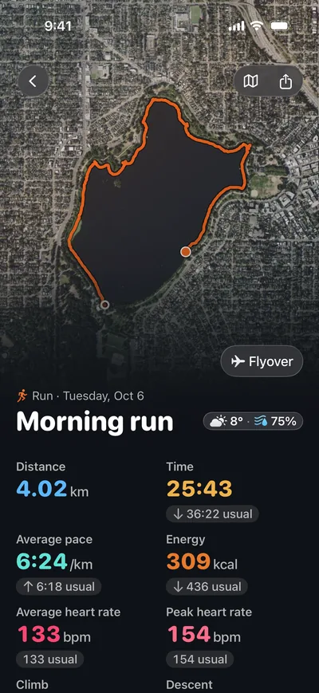
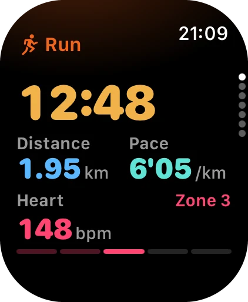
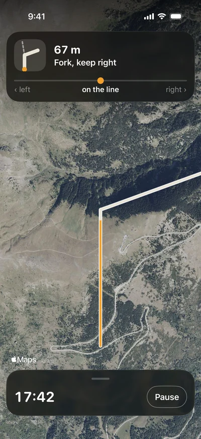
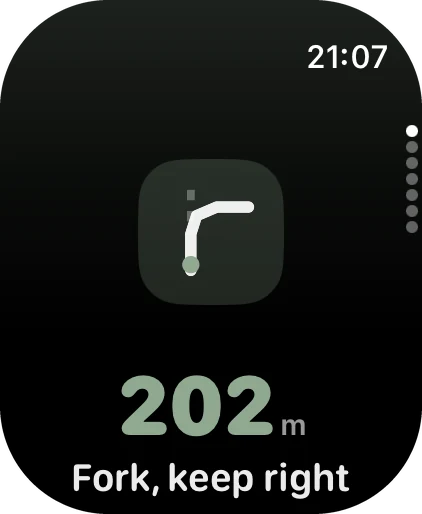

Health numbers stay on your iPhone.
No account and no server doing the maths. Aera reads Apple Health on your phone and works out every score there. Analytics stay off until you turn them on, and never include health values.
Read the privacy policyAera tells you what your watch’s numbers mean for you, and shows how it knows.
Free · No account · Works with any watch or ring that writes to Apple Health

Your watch says how long you slept. Aera says what that means for you: measured against the sleep you need, learned from your own nights. Stages are shown as what they are: an estimate.
Every run sits beside your usual: faster or slower than normal for you, harder or easier on your heart. Then fly it again in 3D, over the ground you ran.


Draw a route that keeps to real paths, or open a GPX file. Every turn comes before you reach it, on your phone, your wrist or read aloud.


Watches count everything: hours asleep, heartbeats, kilometres. Then they stop at a score and leave you guessing. Aera picks up where the score stops. It holds each number against your own usual, says in plain words what it means, and opens it to show how it was worked out.
No account and no server doing the maths. Aera reads Apple Health on your phone and works out every score there. Analytics stay off until you turn them on, and never include health values.
Read the privacy policyTap any number for how it was worked out, the research behind it, and where it stops being reliable.
Read one: the sleep scoreAera reads Apple Health, so it works with an Apple Watch, and with any watch, ring or app that writes your sleep and workouts there.
Monthly, yearly or a one-time purchase. Yearly starts with a 7-day free trial.
Aera reads what your watch, ring or phone writes to Apple Health and tells you what those numbers mean for you. Sleep, stress, strain and every run are held against your own usual, said in plain words, and each number opens a short article on how it was worked out. It also plans routes with turn-by-turn directions and replays runs in 3D.
No. Aera reads Apple Health, so any watch, ring or app that writes your sleep, heart rate and workouts there will do: Apple Watch, Garmin, Oura, WHOOP and others. With only an iPhone, Aera works from steps and workouts, and the reads that need overnight heart data wait until there is some.
Yes. Sleep, stress and strain against your usual, every run read back, every personal best, the route planner with turn by turn and Flyover for the last seven days are free. Premium adds today’s session, your sleep reserve, your places, unlimited saved routes, older Flyovers, full history and every export format.
There is no account. Aera reads Apple Health on your iPhone and works out every score there, so health numbers stay on your iPhone. Product analytics stay off until you turn them on and never include health values.
It learns your usual range from your own nights and sessions over several weeks, then compares each new day with it. While your history is thin, it says it is still learning instead of guessing.
No. Aera is for everyday wellbeing and training. Watch measurements such as sleep stages are estimates, and every article says where its number stops being reliable.
English, Hungarian, German, Spanish and French in full, and Italian, Japanese, Portuguese and Traditional Chinese in part.
Aera is built by Gergő Varga, on his own, with no company behind it. A message from the app or from this site reaches him directly.
Write to him